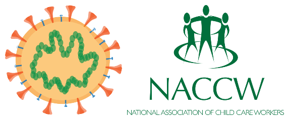

Most of the questions will be based on the National Statistics on Covid-19 and the Presidency's Statements on the escalation of measures to combat COVID-19 epidemic.
1. Community health teams will focus on expanding screening and testing. Which residential areas will they focus on first?
Answer:First focus will be on high density and high-risk areas.
2. On the 27th of March 2020, the National Covid-19 website reported the highest number of positive cases tested for Covid-19 - what was the number ?
Answer: 243
3. In the context of Covid-19, what is the Temporary Employee Relief Scheme?
Answer: It is a special dispensation that will enable companies to pay employees directly during this lockdown period and avoid retrenchment
4. Through the Compensation Fund, which type of employee falling ill through exposure at their workplace will be paid?
Answer:Any employee
5. Is it true that commercial banks have been exempted from provisions of the Competition Act to enable them to develop common approaches to debt relief and other necessary measures?
Answer: Yes, it's very true
6. Using the tax system, how will the government be assisting businesses in the private sector that may be in distress during this National lock-down?
Answer: A tax subsidy will be provided of up to R500 per month for the next four months for those private sector employees earning below R6,500 under the Employment Tax Incentive
7. Approximately how many workers will this intervention help?
Answer:4 million workers
8. Which 2 provinces recorded their first Covi19 positive cases this week?
AnswerThe Northern Cape and the North West
9. According to wikipedia how many deaths from Covid 19 has South Africa recorded this week?
Answer2
10. Is it true that The Department of Small Business Development has made over R500 million available immediately to assist small and medium enterprises that are in distress through a simplified application process ?
Answer:Yes, it's true